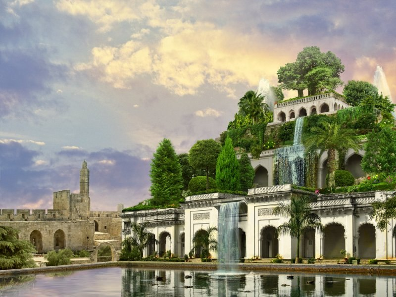
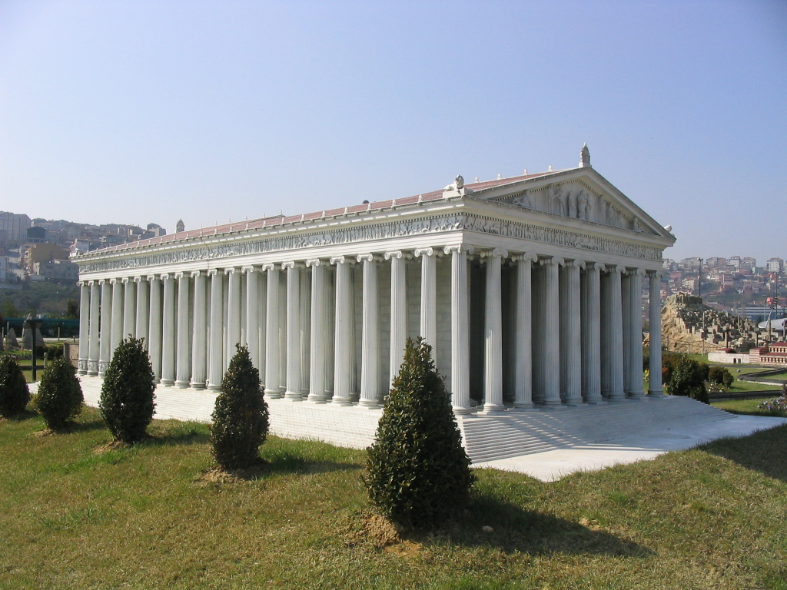

Для перехода нажмите на картинку
Семь чудес света, (лат. septem miracula mundi), самые знаменитые памятники древнего мира — египетские
пирамиды в Эль-Гизе, Сады Семирамиды, Зевса Олимпийского статуя, Мавзолей в Галикарнасе, Артемиды
Эфесской храм, Фаросский маяк, Колосс Родосский. Составление списка самых знаменитых поэтов, философов,
полководцев, великих царей, как и памятников архитектуры и искусства — традиционный «малый» жанр греческой
эллинистической поэзии и своего рода упражнение в риторике. Сам выбор числа освящен древнейшими представлениями
о его полноте, законченности и совершенстве, число 7 считалось священным числом бога Аполлона
(Семеро против Фив, Семь мудрецов и т. п.). Подобно сборникам высказываний знаменитых мудрецов, собраниям
анекдотов и рассказам о диковинах сочинения о Семи чудесах света были популярны в античную эпоху и включали
в себя описания самых грандиозных, самых великолепных или в техническом смысле самых поразительных построек
и памятников искусства. Вот почему их называли чудесами, в то время как в списке отсутствуют многие подлинные
шедевры древней архитектуры и искусства — Акрополь в Афинах с творением Фидия — статуей Афины Парфенос,
прославленная статуя Афродиты Книдской работы Праксителя и т. д. Упоминания о Семи чудесах появляются в
сочинениях греческих авторов, начиная с эпохи эллинизма. Их надо было знать уже в школе, о них писали ученые
и поэты. В данной статье собрана краткая информация о каждом чуде света.
Египетские пирамиды
Пирамиды — единственное чудо из заветной семёрки, сохранившееся до наших дней. Оно же и самое
древнее: возраст трёх великих пирамид, которыми восхищались греки и продолжаем поражаться мы,
— фараонов Хеопса, Хефрена и Микерина — около пяти тысяч лет. Эти колоссальные сооружения пока
неподвластны влиянию времени. Самая громадная — пирамида Хеопса — высотой 147 метров сложена из
2 300 000 глыб известняка, каждая из них весом около двух тонн. Пирамиды служили усыпальницами
царям Египта и строились задолго до их смерти в течение десятков лет. Как это происходило в
точности — неизвестно. Одни историки говорят, что строителями были бесправные рабы, другие —
что на возведении пирамид за кормление трудились египетские крестьяне, сменявшие друг друга
каждые три месяца.

До сих пор неизвестно также в точности, каким способом втаскивали гигантские
глыбы наверх по мере роста пирамиды. Какой-либо техникой, кроме блоков и рычагов, строители в
то время не располагали. Кто-то из исследователей предположил даже, что затаскивали блоки по
специальным насыпям из песка — и если это действительно было так, то общий объём проделанных
работ колоссально возрастает… Как бы то ни было, работа гигантская и удивительно точная: блоки
сложены так, что между соседними не втиснется лезвие ножа. С точки зрения современного человека,
пирамиды бессмысленны, зато величественны, прекрасны и совершенны. Поэтому и сегодня они неизменно
поражают всех, кто их видит.

Сады Семирамиды (висячие сады Вавилона)

Легенда гласит, что царь Вавилона Навуходоносор II, правивший в VIвеке до нашей эры, решил подарить своей
любимой жене Амитис, родившейся в зелёных просторах Мидии (древнее государство на западе современного Ирана),
оазис — точную копию её родины. Согласно другой легенде, сады построила царица Семирамида, и назвали их её
именем. Сады располагались на широкой четырёхъярусной башне. Ярусы засыпали толстым слоем плодородной земли,
в которую посадили диковинные растения, причём не только цветы, но и высокие пальмы, и деревья разных пород.
Для полива этих садов сотни рабов качали воду из Евфрата.

Триста лет спустя великий завоеватель Александр Македонский был настолько восхищён красотой садов, что решил
сделать Вавилон столицей своего государства. Но шли годы и столетия, город приходил в упадок, наводнения
разрушали строения из плохо обожжённой глины, и прекрасные висячие сады рассыпались в прах.
Храм Артемиды Эфесской
Древнегреческий город Эфес на полуострове Малая Азия (территория современной Турции) его жители
посвятили богине Артемиде. В VI веке до нашей эры они решили построить своей покровительнице
величественный храм — Артемиссион, превосходящий красотой все известные святилища. Строительство
поручили архитектору Херсифрону, который создал проект и взялся за дело. Задача оказалась настолько
огромной и сложной, что до завершения работ Херсифрон не дожил. Дело продолжил его сын Метаген,
но тоже не сумел довести до конца. Заканчивали стройку архитекторы Пеонит и Деметрий. Всего,
как гласит история, строительство заняло 120 лет. И всё же прекрасный храм — гигантское строение
площадью более 6000 квадратных метров, опоясанное двумя рядами высеченных из мрамора огромных
колонн 18-метровой высоты, — был построен. Увы, простоял он не более ста лет. В 356 году до
нашей эры житель Эфеса Герострат поджёг храм, решив таким образом увековечить своё имя

Эфесцы не смирились с утратой. Собрав деньги, они восстановили храм в прежнем великолепии, превратив
его не только в святилище Артемиды, чья 15-метровая статуя была установлена в главном зале, но и в
собрание произведений искусства выдающихся художников того времени. По сути, храм Артемиды стал самым
знаменитым музеем античности, просуществовав в таком качестве более 600 лет.
В 263 году нашей эры готские племена захватили Эфес и разграбили храм. В византийский период его мраморную
облицовку разобрали, чтобы использовать как строительный материал, а речные наносы похоронили остатки фундамента,
и лишь в XIX веке английские археологи на шестиметровой глубине открыли вновь следы некогда великого сооружения.

Статуя Зевса Олимпийского
V век до нашей эры. Город Олимпия считался во всей Древней Греции священным. Здесь располагались храмы и святилища
богов, именно здесь начали проводиться Олимпийские игры. Главной святыней Олимпии был храм верховного бога Зевса со
статуей работы великого скульптора Фидия.
Высота сидящего на троне бога достигала 17 метров. Основа статуи вырезалась из дерева, потом на неё накладывали
искусно выточенные из слоновой кости пластинки и чеканное золото. Существует легенда о том, что когда Фидий закончил
свой труд, то подошёл к статуе и спросил: «Ну что, Зевс, ты доволен?» В этот момент раздался удар грома, и по мраморному
полу перед троном пробежала трещина.
Текли века. Частые в Греции землетрясения разрушили большин-ство храмов Олимпии, однако статуя Зевса пережила
многие из них. Византийские императоры перевезли её со всеми предосторожностями в Константинополь, хотя религия
языческих богов уже сменилась христианством и изображения прежних кумиров были не в чести. В Vвеке нашей эры
пожар уничтожил дворец императора Феодосия, где находилась статуя. Деревянный колосс стал добычей огня. Но
по сохранившимся свидетельствам тех времён, рисункам и записям учёные смогли узнать, как выглядело творение
Фидия, просуществовавшее почти тысячелетие.
Галикарнасский мавзолей
Не только египетские фараоны заранее заботились о своих гробницах. Царь Мавсол, правитель города Галикарнас
в Малой Азии, известный в истории лишь своей жадностью, решил сделать то же самое. Он приказал построить
мавзолей, который должен был одновременно стать храмом, где Мавсолу воздавались бы божеские почести. Мавсол
пригласил лучших архитекторов, и примерно в 360 году до нашей эры строительство началось. Сам Мавсол до его
завершения не дожил, возведение мавзолея продолжила его вдова, царица Артемисия. Но и ей не удалось увидеть
мавзолей построенным. Полностью усыпальница была закончена лишь при внуке Мавсола. Это было большое прямоугольное
здание шириной 66 метров, длиной 77 и высотой 46 метров.
Мраморные колонны и статуи, выложенные белым мрамором ступени, поднимающиеся в зал для жертвоприношений в
честь царя… Историки и писатели древности единодушно описывали гробницу Мавсола как необыкновенно прекрасное
сооружение.Мавзолей простоял около 1800 лет, хотя частые землетрясения его изрядно повредили. Разрушили же чудо
света окончательно не силы природы, а крестоносцы, захватившие в XV веке побережье Малой Азии. О великом творении
древних ваятелей сегодня напоминают лишь плиты с античными барельефами да фрагменты статуй, хранящиеся в
Британском музее, куда они были перевезены с раскопок.

Александрийский (Фаросский) маяк
 маяк")
Маяк на острове Фарос, открывавший вход в порт основанного Александром Македонским города Александрии (современный Египет),
был построен в 280 году до нашей эры. Каменную башню высотой 120 метров возвели всего за пять лет, хотя для её строительства
пришлось из острова сделать полуостров: между Фаросом и «большой землёй» насыпали дамбу, по которой доставляли строительные
материалы. Триста лет спустя великий завоеватель Александр Македонский был настолько восхищён красотой садов, что решил
сделать Вавилон столицей своего государства. Но шли годы и столетия, город приходил в упадок, наводнения разрушали строения
из плохо обожжённой глины, и прекрасные висячие сады рассыпались в прах.
Колосс Родосский
В 305 году до нашей эры остров (и город) Родос вознамерился захватить полководец Деметрий. Как он ни старался, ничего у
него не получилось. В честь одержанной победы родосцы решили возвести гигантскую статую бога Гелиоса, которого считали
покровителем острова. Проект был уникален тем, что статую решили делать из бронзы. Существовавшая до тех пор технология
бронзового литья шедеврами похвастаться не могла. Но родосский скульптор Харес сумел сделать невероятное. Он отлил частями,
а потом собрал гиганта высотой 35 метров, слава о котором мгновенно (со скоростью передвижения парусных и вёсельных кораблей)
разнеслась по всему Средиземноморью.
К сожалению, простоял Колосс совсем недолго. Через 56 лет разрушительное землетрясение почти уничтожило город.
Рухнула, разбилась и гигантская статуя. Обломки её лежали на земле ещё около тысячи лет, пока захватившие Родос
арабы не продали их как бронзовый лом заплывшему на остров купцу. Как именно выглядела бронзовая скульптура,
ныне точно неизвестно. Предположений много. Сейчас на острове Родос туристам предлагают массу вариантов изображений.
В принципе, каждое из них выглядит впечатляюще.